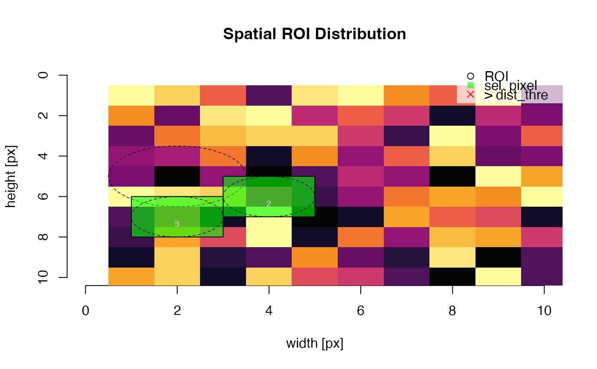
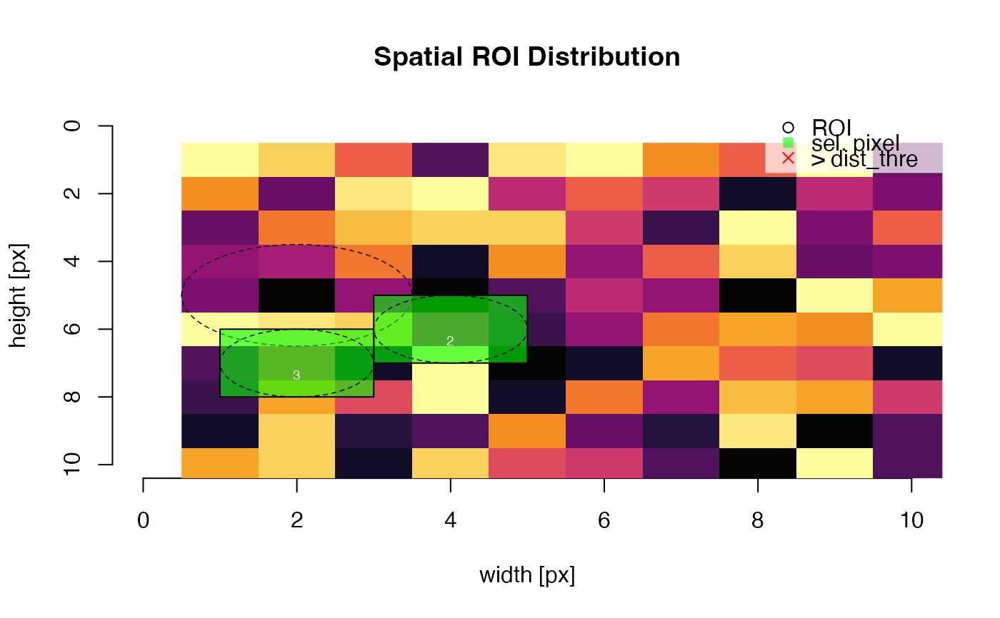

Create ROI graphic with data extracted from the data imported via read_RF2R. This function is used internally by analyse_IRSAR.RF but might be of use to work with reduced data from spatially resolved measurements. The plot dimensions mimic the original image dimensions
plot_ROI(
object,
exclude_ROI = c(1),
dist_thre = -Inf,
dim.CCD = NULL,
bg_image = NULL,
plot = TRUE,
...
)Arguments
- object
RLum.Analysis, RLum.Results or a list of such objects (required): data input. Please note that to avoid function errors, only input created by the functions read_RF2R or extract_ROI is accepted
- exclude_ROI
numeric (with default): option to remove particular ROIs from the analysis. Those ROIs are plotted but not coloured and not taken into account in distance analysis.
NULLexcludes nothing.- dist_thre
numeric (optional): euclidean distance threshold in pixel distance. All ROI for which the euclidean distance is smaller are marked. This helps to identify ROIs that might be affected by signal cross-talk. Note: the distance is calculated from the centre of an ROI, e.g., the threshold should include consider the ROIs or grain radius.
- dim.CCD
numeric (optional): metric x and y for the recorded (chip) surface in µm. For instance
c(8192,8192), if set additional x and y-axes are shown- bg_image
RLum.Data.Image (optional): background image object please note that the dimensions are not checked.
- plot
logical (with default): enable or disable plot output to use the function only to extract the ROI data
- ...
further parameters to manipulate the plot. On top of all arguments of graphics::plot.default the following arguments are supported:
lwd.ROI,lty.ROI,col.ROI,col.pixel,text.labels,text.offset,grid(TRUE/FALSE),legend(TRUE/FALSE),legend.text,legend.pos
Value
An ROI plot and an RLum.Results object with a matrix containing the extracted ROI data and a object produced by stats::dist containing the euclidean distance between the ROIs.
Function version
0.2.0
See also
How to cite
Kreutzer, S., 2023. plot_ROI(): Create Regions of Interest (ROI) Graphic. Function version 0.2.0. In: Kreutzer, S., Burow, C., Dietze, M., Fuchs, M.C., Schmidt, C., Fischer, M., Friedrich, J., Mercier, N., Philippe, A., Riedesel, S., Autzen, M., Mittelstrass, D., Gray, H.J., Galharret, J., 2023. Luminescence: Comprehensive Luminescence Dating Data Analysis. R package version 0.9.23. https://CRAN.R-project.org/package=Luminescence
Examples
## simple example
file <- system.file("extdata", "RF_file.rf", package = "Luminescence")
temp <- read_RF2R(file)
plot_ROI(temp)
 ## in combination with extract_ROI()
m <- matrix(runif(100,0,255), ncol = 10, nrow = 10)
roi <- matrix(c(2.,4,2,5,6,7,3,1,1), ncol = 3)
t <- extract_ROI(object = m, roi = roi)
plot_ROI(t, bg_image = m)

## in combination with extract_ROI()
m <- matrix(runif(100,0,255), ncol = 10, nrow = 10)
roi <- matrix(c(2.,4,2,5,6,7,3,1,1), ncol = 3)
t <- extract_ROI(object = m, roi = roi)
plot_ROI(t, bg_image = m)
